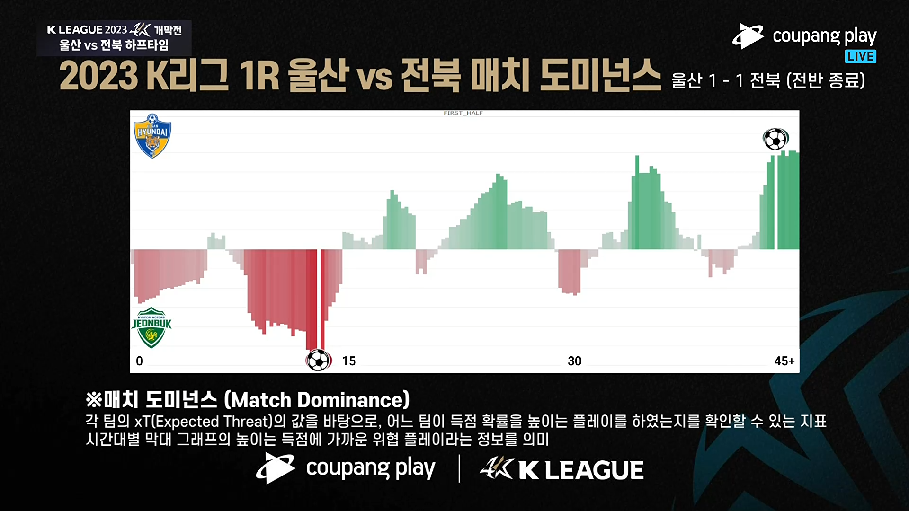
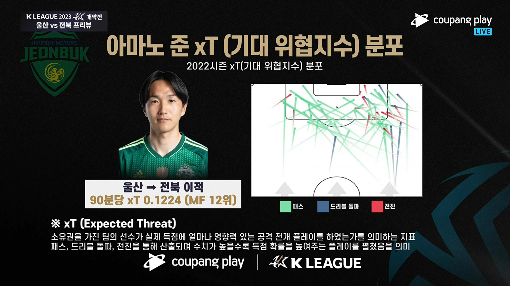
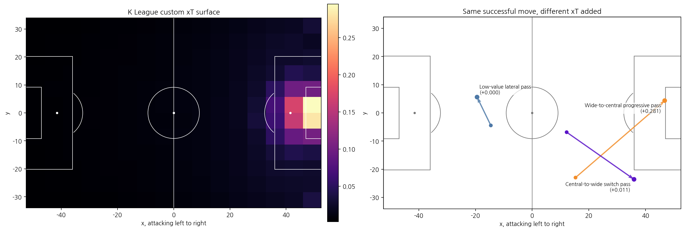
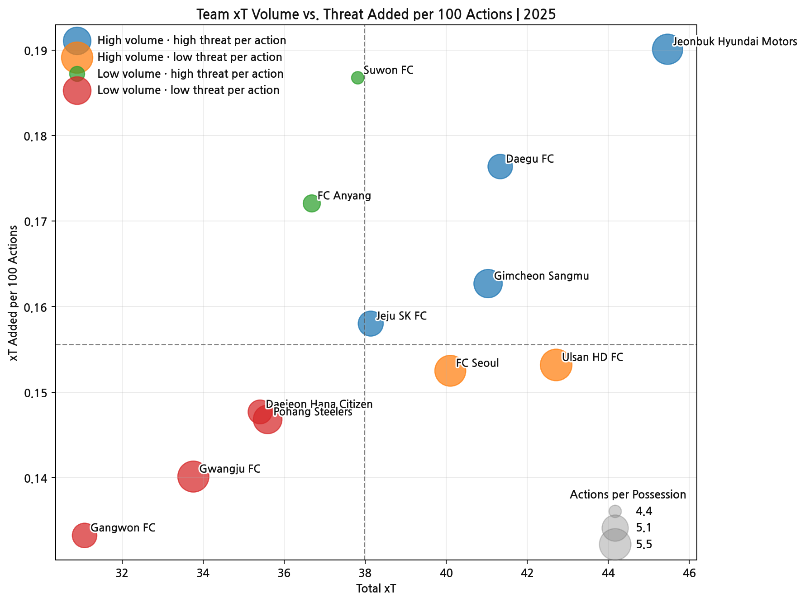
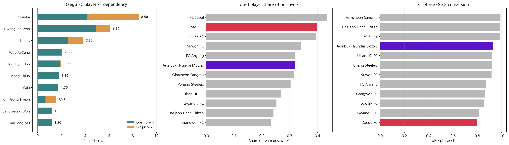
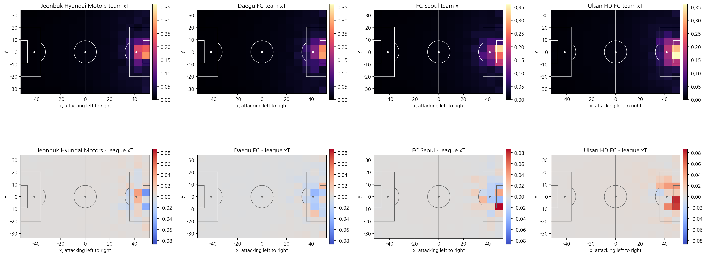
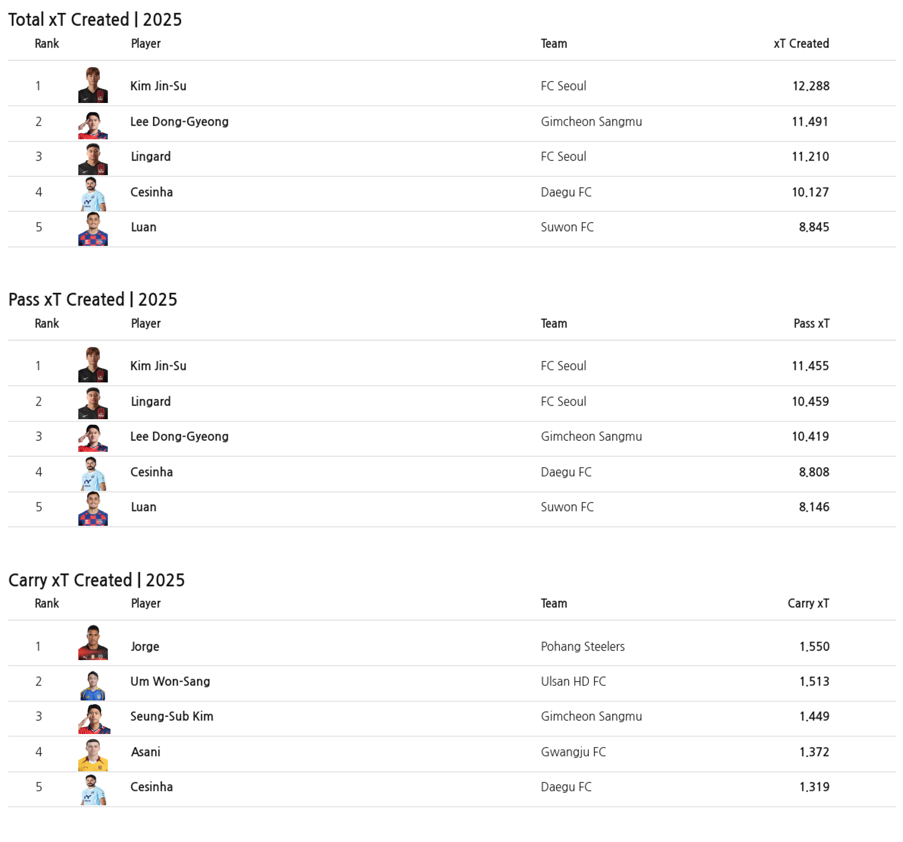
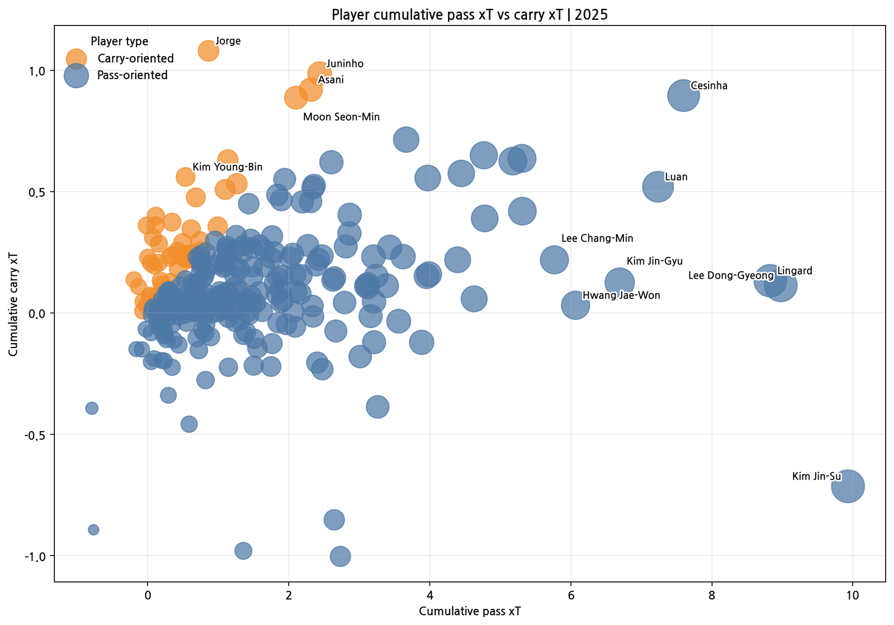
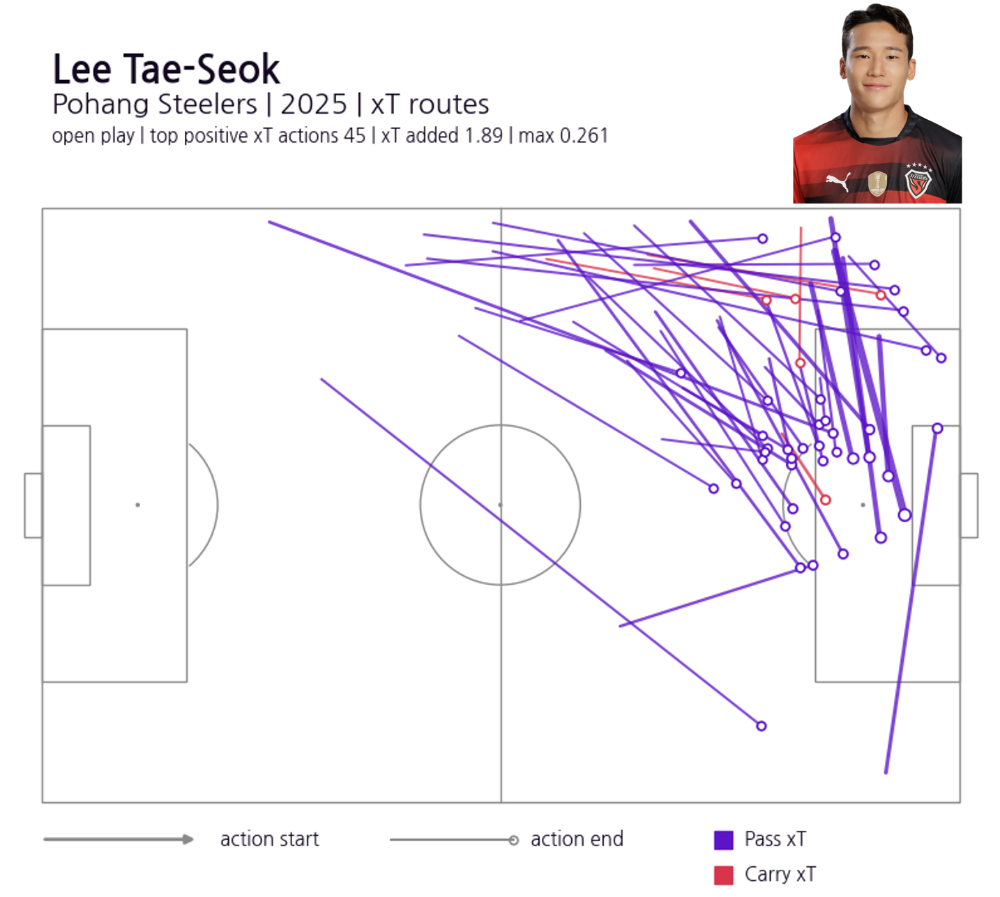
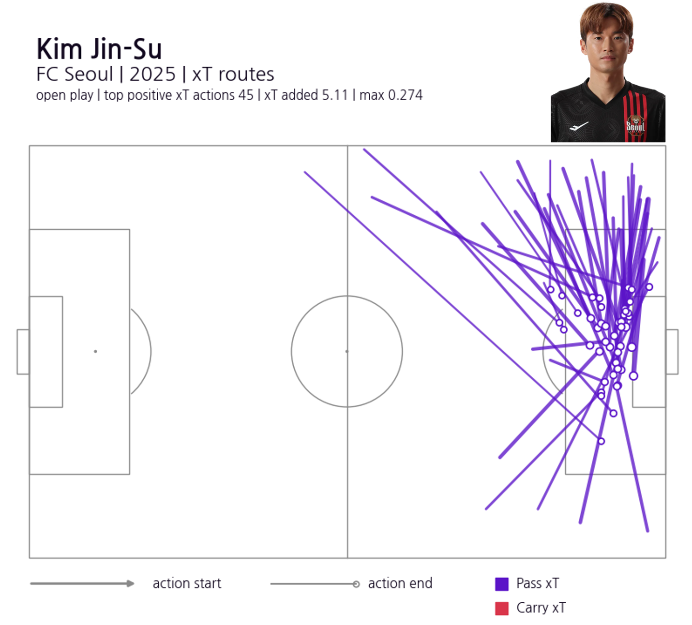

At the 2026 World Cup, South Korea went out in the group stage.
A defeat to South Africa in their final match left them third in the group, short of the knockout rounds. The disappointment matched the expectations. Criticism flew in many directions, and some of it landed on the left-back Lee Tae-Seok.
Lee Tae-Seok built on a strong K League career to move to the Austrian league, where he has settled in and held his own. So why could a full-back recognised in the K League — and in European club football — not show the same form for the national team?
Rather than forcing a definitive answer, this article looks more closely at how Lee Tae-Seok actually created attacking threat in the K League. The metric we use is xT (Expected Threat). xT shows how much a pass or carry, by moving the ball, raised a team's goal threat.
We will look at the 2025 K League through xT, then return to Lee Tae-Seok at the end — where on the pitch, and through which passes, he created his threat; and whether that threat appeared the same way for the national team, or might have changed under different conditions. That is the question the K League data leaves us with.
1. What Is xT?
xT is a location-based attacking-value model published in 2019 by Karun Singh, a data scientist at Arsenal. To capture the build-up contributions that shots and assists miss, it assigns a threat value to every location on the pitch.
xT is now one of the most widely known attacking-value metrics, and xT-based graphics appear readily on K League broadcasts.


The idea behind xT is fairly intuitive. Not every location on the pitch carries the same attacking value. A space such as the centre in front of the opponent's goal, where the next action easily leads to a shot, has a high threat value, while a space far from goal, like one's own flank, has a low one. So the more a pass moves the ball from a low-threat location to a high-threat one, the more xT that action creates.
xT Added = xT(end location) − xT(start location)
For example, a pass played sideways from deep barely changes the ball's location, so it adds almost no xT even when completed. A pass that threads through the opponent's defensive line into the centre, the half-space, or in front of the box raises the chance of a shot to follow, and therefore earns more xT.

On the left is the xT surface learned from K League data; the threat value rises steeply toward the centre in front of the opponent's goal. On the right, all three passes are completed, but the back square pass barely raises xT, the wide progressive pass adds a little, and the pass toward the centre/half-space adds more.
It is also worth clarifying the difference between xT and xPass. Where xPass evaluates how difficult a pass was to complete, xT evaluates how much a completed pass or carry moved the ball into a more dangerous location. In other words, xT looks less at the difficulty of a pass and more at the attacking value of where the ball ends up.
2. Teams That Created the Most Threat, and Those That Created It More Directly
Let us turn to the teams. Which team created the most threat in the 2025 K League?
The chart below shows each K League team's xT. The further right, the more total threat a team built over the season; the higher up, the more xT a team added per action on average.

Jeonbuk Hyundai Motors led in xT per match. Jeonbuk also won the league that year, so this is a fairly intuitive result. But look a little further down and the story changes. Ulsan, second in xT per match, finished ninth, and third-placed Daegu were ultimately relegated. Creating a lot of threat in the attacking phase did not necessarily move in the same direction as the final standings.
Jeonbuk sat highest on both measures — the largest total attacking output, and individual actions that led to larger threat gains too. Daegu and Gimcheon also sit near the top: teams that often moved the ball into more dangerous locations within relatively few actions.
By contrast, Seoul and Ulsan had high total xT but sat below the average line for xT per action. Rather than raising threat sharply with a single pass or carry, they accumulated it through several phases of build-up. Suwon FC had a smaller total xT but a relatively high xT per action, tending to create threat within few actions.
Being higher up, though, does not automatically mean a better attacking team. Daegu had a high xT per action but were relegated. xT shows the process of moving the ball into dangerous locations; it does not explain whether that threat led to good shots and goals, or how the team fared defensively. In Daegu's case, we look more closely at why the threat xT showed and the actual results diverged.
3. Daegu Created the Threat, but Could Not Turn It Into Chances
Daegu sat near the top in both total xT and xT per action. Their attacking volume was not small, and they often moved the ball into dangerous areas within few actions. Yet that threat ultimately did not translate into the results needed to avoid relegation.

Daegu's xT was built around Cesinha and Hwang Jae-Won. Cesinha recorded 8.50 and Hwang Jae-Won 6.10 xT, accounting for a large share of the team's attack. In fact, Daegu's top three players created about 40% of the team's positive xT — the second-highest share in the league. Daegu's attacking threat was heavily concentrated in a few key players.
The bigger problem came after the xT. Daegu had the lowest rate in the league of converting the threat built at the xT stage into xG. They moved the ball into dangerous locations, but the passes, movement inside the box, and shot selection that followed did not lead to high-quality chances often enough.
Daegu's case reaffirms that xT is a metric for the attacking, progressive phase. Completing that threat into chances and goals after reaching dangerous areas — and the team's defensive results — cannot be explained by xT alone.
4. A Different xT Map for Each Team
While xT can be computed from league-wide average location values, learning each team's own action patterns produces a slightly different picture.

The top maps are xT surfaces built from each team's own data; the bottom maps compare them with the league average. The centre in front of the opponent's goal has the highest threat value for every team. But which locations in front of the box, in the half-spaces, and on the flanks carry relatively higher value differed slightly from team to team.
The key point is that this map does not directly show "which zones each team actually created the most xT in." Rather, it shows whether, with the ball in the same location, a team's subsequent build-up tended to be more threatening than the league average.
Such team xT maps do more than offer a visual comparison. In opponent analysis, you can check from which zones threatening build-up tends to follow when the ball is won; in your own analysis, you can review which spaces a team tends to build attacking value through.
💡 Interactive visualization
We also built an interactive visualization for exploring each K League team's xT. Select a team to see which zones it created threat in, and select a particular start zone to see where the passes and carries from there mainly went, which players created the xT, and what the representative high-xT routes were.
Through this, opponent analysis can flag which zones' attacks to be especially wary of, and your own analysis can review which spaces and which players a team's attacking threat is built through.
5. The Same Threat, Different Methods — Player xT from Passes and Carries
A team's xT ultimately comes from its players' actions. But the same xT can be built in different ways. Some players send the ball into dangerous areas with progressive passes; others carry it past the defensive line themselves.
First, the 2025 K League player rankings for total xT and pass/carry xT.

What stands out is that full-backs and playmakers, rather than classic number-nine strikers, dominate the top of the list. xT does not measure who finished the shot, but who moved the ball to the location where that shot became possible. So full-backs, who often stand at the start of build-up and attacking phases, and playmakers, who repeat progressive passes and carries, tend to record high xT.
The rankings alone, though, do not tell us how each player created threat. To see that, we split each player's cumulative xT into passes and carries. The further right, the more threat a player created through passes; the higher up, the more through carries. Blue dots are pass-oriented players, orange dots relatively carry-oriented.

At the far right is Kim Jin-Su. His pass xT was among the highest in the league, while his carry xT was negative. Rather than dribbling the ball forward himself, he is closer to a passing full-back who sends the ball into more dangerous areas from the left with progressive passes and crosses.
Cesinha recorded high xT in both passing and carrying — a hybrid attacking option who advances himself and then continues the move with a pass. Lingard and Lee Dong-Gyeong are also pass-led, but added some threat through carries too.
By contrast, Jorge, Juninho, Na Sang-Ho and Moon Seon-Min are carry-heavy. They created xT by advancing the ball themselves rather than by passing.
In the end, the same xT is built in different ways — some through passes, some through carries, and some by mixing the two.
6. Lee Tae-Seok and Kim Jin-Su — Same Position, Different Threat
Lee Tae-Seok moved mid-season in 2025 to FK Austria Wien, yet still ranked 19th in the league for cumulative xT despite playing only 22 K League matches. Given that he did not play a full season, he created a fair amount of attacking threat in a short time.
The cumulative-xT ranking alone, however, does not show how Lee Tae-Seok created threat. To see this more clearly, we plotted the top 45 positive-xT actions for both Lee Tae-Seok and Kim Jin-Su on the pitch.


Both are left-backs who create threat through passes rather than carries. But where their high-xT actions occurred was clearly different.
Kim Jin-Su's main xT passes are concentrated in the left attacking area near the opponent's box. Crosses and progressive passes from deep on the flank or outside the box, into the centre and inside the box, repeatedly produced high xT. From his top 45 positive-xT actions alone, Kim Jin-Su recorded a cumulative 5.11 xT.
Lee Tae-Seok's high-xT actions, by contrast, were not clustered only near the box. More of his passes start from the left flank in midfield and deeper areas and connect to the wide forward areas or in behind the defensive line. Rather than delivering a final cross close to the box, his main threat routes were early crosses and wide progressive passes that quickly send the ball into forward space before the attack is fully set.
This difference contrasts with the role Lee Tae-Seok was given at this World Cup. For the national team, he often pushed high up the flank to attempt crosses. In the K League, the moments where he created the most threat were passes that changed the direction of the attack from earlier positions.
Of course, this difference alone cannot explain his national-team performances. The level of the opposing defence, movement inside the box, understanding with teammates, and game situations all matter too. But one question remains: how closely did the role asked of Lee Tae-Seok for the national team match the way he created his greatest threat in the K League?
Conclusion: A Player's xT Is Not Created Alone
The aim of this article is not to defend a particular player, nor to explain national-team performances with a single metric. Rather, it is to show that when we evaluate a player, instead of looking only at outcomes, we should also look at which actions create value, and whether the environment for those actions to appear is in place.
Lee Tae-Seok and Kim Jin-Su are both left-backs who create threat through passes. But Kim Jin-Su's xT was built mainly in the final phase near the box, while Lee Tae-Seok's came mainly through early crosses and wide progressive passes toward forward space from earlier positions.
A full-back repeatedly crossing from high up does not by itself prove that was his best-suited role. Conversely, recording high xT in the K League does not mean the same numbers and scenes will reproduce for the national team. When the location where you receive the ball, teammates' movement, the shape of the opposing defence, and the team's attacking structure change, so do the same player's choices and value.
xT is not a metric that hands you answers. Instead, it leaves questions like these.
In which actions did this player create the most value? And is the team building an environment where those actions can happen again?
Not a single scene or a single outcome, but the actions a player does best together with the structure that made those actions possible. That, perhaps, is the greatest help xT offers in reading football.
For questions about the analysis or collaboration, write to thedatadribblers@gmail.com.